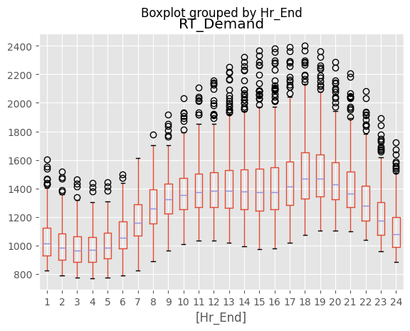

Featured project · Regression
Can weather help predict electricity demand?
An exploration of hourly electricity load in New Hampshire: examining how time and weather relate to demand, and comparing regression approaches.
Read the project